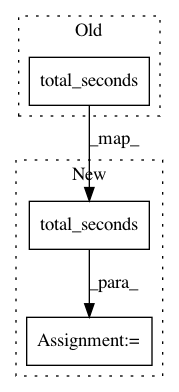

fc8c6f7b3a974952ee20ec2b26ac525bdd4ea767,bayes_opt/support/objects.py,print_info,print_info,#print_info#Any#Any#Any#Any#Any#Any#Any#,180
Before Change
elif self.lvl == 1:
if (i+1)%10 == 0:
minutes, seconds = divmod((datetime.now() - op_start).total_seconds(), 60)
print("Iteration: %3i | Current maximum: %f | Time taken: %i minutes and %.2f seconds" % (i+1, ymax, minutes, seconds))
else:
After Change
elif self.lvl == 1:
self.timer += (datetime.now() - op_start).total_seconds()
if (i+1)%10 == 0:
minutes, seconds = divmod(self.timer, 60)
print("Iteration: %3i | Current maximum: %f | Time taken: %i minutes and %.2f seconds" % (i+1, ymax, minutes, seconds))
self.timer = 0
else:
pass
In pattern: SUPERPATTERN
Frequency: 4
Non-data size: 3
Instances
Project Name: fmfn/BayesianOptimization
Commit Name: fc8c6f7b3a974952ee20ec2b26ac525bdd4ea767
Time: 2014-06-24
Author: fmfnogueira@gmail.com
File Name: bayes_opt/support/objects.py
Class Name: print_info
Method Name: print_info
Project Name: tgsmith61591/pmdarima
Commit Name: fb4c54f4646e52493c9b53a61d089c5f9cbe1a4a
Time: 2019-11-14
Author: krishna.sunkara@aexp.com
File Name: pmdarima/arima/_auto_solvers.py
Class Name: _StepwiseFitWrapper
Method Name: step_through
Project Name: fmfn/BayesianOptimization
Commit Name: fc8c6f7b3a974952ee20ec2b26ac525bdd4ea767
Time: 2014-06-24
Author: fmfnogueira@gmail.com
File Name: bayes_opt/support/objects.py
Class Name: print_info
Method Name: print_log
Project Name: facebookresearch/ParlAI
Commit Name: 1d9a26accf751f2b1fa9006059b95a146f8a4ad9
Time: 2017-07-12
Author: willfeng@fb.com
File Name: parlai/mturk/core/test/test_concurrent_polling.py
Class Name:
Method Name: test_thread